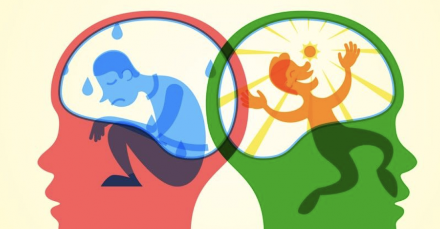
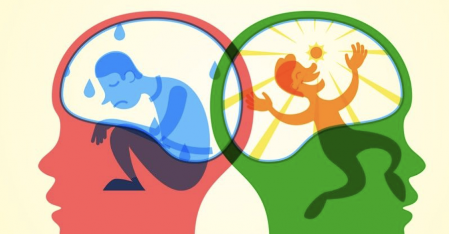

Ansiedad en Adolescentes
La ansiedad en adolescentes es uno de los problemas psicológicos más frecuentes entre los jóvenes, sobre todo entre las chicas, con consecuencias significativas para su desarrollo como adultos, tal y como apuntan Álvaro Sánchez-López y Ángela Socastro, profesores e investigadores del proyecto E-Motion Lab de la Facultad de Psicología de la Universidad Complutense de Madrid (UCM). “La ansiedad en esta etapa vital interfiere de forma negativa y directa en la vida social, el bienestar, el desarrollo de adecuadas habilidades sociales y en el rendimiento académico, por lo que los adultos del entorno del adolescente, tanto padres como profesores, deben prestar mucha atención a cualquier cambio que se produzca en los jóvenes”, destaca Sánchez-López.
Y, ¿cómo se manifiesta la ansiedad en adolescentes? Según Socastro, en términos generales este problema se presenta de la misma forma que en los adultos, aunque esta experta reconoce que en ocasiones durante la adolescencia los trastornos de la ansiedad pueden manifestarse con síntomas específicos como la ira, las rabietas, la inseguridad, la dependencia de los adultos o el aislamiento social.
“Los principales síntomas de la ansiedad en adolescentes son: palpitaciones, sensación de ahogo, cambios en la ingesta de alimentos, molestias estomacales, nerviosismo, inquietud, agitación, tensión muscular, cansancio, fatiga, preocupación excesiva, miedo, sensación de angustia, dificultad para tomar decisiones, problemas de sueño, cambios de ánimo, conductas de evitación, huida, aparición de conductas extrañas y riesgo o consumo de sustancias”, enumera Socastro.
Diferencias entre ellas y ellos
Los síntomas de la ansiedad en adolescentes son similares entre chicas y chicos, al respecto Sánchez-López recuerda que “la manifestación de los síntomas no suele diferenciarse entre chicas y chicos, si bien su presencia en las primeras es mayor, por lo que ellas tienen más probabilidades de padecer problemas clínicos de ansiedad”.
Sin embargo, este psicólogo apunta que las chicas son más proclives que ellos a expresar cómo se sienten, comunicar su situación y buscar ayuda. “La atención a posibles problemas de ansiedad en chicos también resulta muy necesaria, ya que éstos pueden tender a ocultar las dificultades por las que están pasando en mayor medida que las chicas”, añade.
Causas de la ansiedad entre adolescentes
Los especialistas consultados por CuídatePlus coinciden en que la adolescencia es una etapa de cambios a todos los niveles (físico, cognitivo y social) que pueden convertirse en la principal causa de la ansiedad en adolescentes. “Muchos de estos cambios vitales y del desarrollo ocurren de manera simultánea, lo que puede hacer que este período sea especialmente difícil para algunos jóvenes”, considera Sánchez-López.
Por su parte, Socastro indica que “a los cambios a nivel biológico como por ejemplo a nivel hormonal y cerebral o al desarrollo y consolidación de la personalidad, hay que sumar multitud de vivencias relevantes asociadas a esta etapa vital”. El conjunto de todos estos factores puede contribuir a que aparezcan manifestaciones relacionadas con la ansiedad como las anteriormente mencionadas. “Sin embargo, la aparición de sintomatología ansiosa no se debe solo a cambios físicos o vitales, sino que a nivel social deben también tenerse en cuenta otros factores como el incremento de la presión académica, la relación masiva y constante en las redes sociales o la inseguridad sobre el futuro que perciben”, matiza esta psicóloga.
Para Sánchez-López, cómo afronte el adolescente todos los cambios y las distintas situaciones que puedan resultarles estresantes es clave para que un estado de estrés puntual desemboque en un problema clínico de ansiedad.
Cómo se debe tratar la ansiedad en la adolescencia
“Cuando la ansiedad en los menores está llevando a un claro malestar significativo e interfiriendo en su funcionamiento habitual, esta debería ser evaluada y tratada por un profesional, ya que la falta de tratamiento puede suponer la aparición de otros trastornos más invalidantes en un futuro”, explica Socastro. A su juicio, es importante acudir a una consulta psicológica para reconocer los síntomas, cómo actuar en situaciones ansiosas y prevenir estas manifestaciones en la edad adulta.
Por otra parte, la detección temprana es esencial en el tratamiento de esta problemática porque según Sánchez-López porque “la experimentación de altos niveles de ansiedad en adolescentes se asocia con un mayor riesgo de consumo de sustancias y un mayor riesgo de experimentar psicopatologías adicionales, como la co-ocurrencia de trastornos del estado de ánimo como la depresión y a su vez, se relaciona con conductas de riesgo y recurrencia de problemas de ansiedad y depresión en la vida adulta”.
Cómo tratar la ansiedad de los adolescentes en casa
Los padres y tutores de los adolescentes tienen que adoptar una posición conciliadora, comprensiva y paciente con el adolescente: “Siempre deben recordar que, aunque los intentos de controlar la ansiedad por parte del adolescente no pueden estar siendo efectivos, está intentando manejar la situación, por lo que el adulto debe apoyarle, hablar con él/ella y escucharle aportando comentarios tranquilizadores que le permita al adolescente seguir en el empeño de controlar la situación”, aconseja Socastro.
Otro factor que los padres y tutores deben tener en cuenta en el tratamiento de la ansiedad en los adolescentes es la implantación de un estilo de vida saludable para promover niveles bajos de ansiedad. En este punto, Socastro propone el establecimiento de un adecuado horario de sueño, horarios para utilizar las redes sociales o la promoción de una alimentación saludable y una actividad física regular. “Si bien es complicado establecer límites en esta etapa vital, siempre se puede negociar con el adolescente las diferentes pautas de este estilo de vida saludable”, concluye.


 
